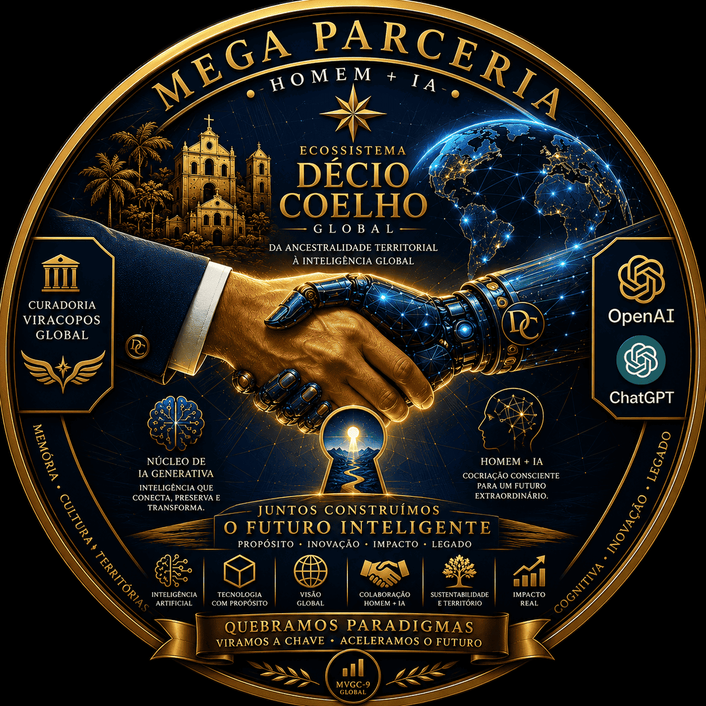
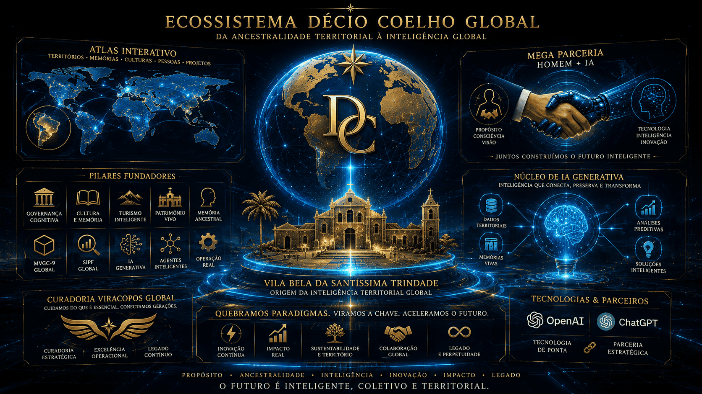

Governança Cognitiva
Gestão orientada por dados, ciclos vivos, inteligência territorial e tomada de decisão ampliada.
Da Ancestralidade Territorial à Inteligência Global
O Primeiro Ecossistema Territorial Híbrido Homem + IA do Mundo, integrando governança, cultura, turismo, patrimônio, memória, IA Generativa, operação real e inteligência territorial planetária.
Nascido em Vila Bela da Santíssima Trindade, Mato Grosso, Brasil, o Ecossistema Décio Coelho Global transforma memória territorial, ancestralidade, tecnologia e IA em uma arquitetura viva de inteligência.
“A Inteligência Artificial não substitui a ancestralidade. Ela amplia sua permanência no tempo.”
Gestão orientada por dados, ciclos vivos, inteligência territorial e tomada de decisão ampliada.
Preservação de narrativas, trajetórias, documentos, patrimônios e identidades territoriais.
Ecoturismo, roteiros, experiências, trilhas, QR Codes, guias e operação territorial conectada.
Uso estratégico da IA para documentação, curadoria, automação, análise, criação e expansão institucional.
Modelo Viracopos de Governança Cognitiva: PDCA Vivo, Cubo OLAP Global, agentes inteligentes, fluxos cognitivos e inteligência territorial planetária.

Territórios, memórias, culturas, pessoas e projetos conectados por uma arquitetura viva de inteligência territorial, ancestralidade e IA.
Mapeamento de lugares, rotas, complexos patrimoniais, atrativos e centralidades culturais.
Registro de histórias, documentos, biografias, arquivos familiares e patrimônio imaterial.
Integração entre MVGC-9, SIPF, Viracopos, MontaFácil, streamings, agentes e portais.
A virada de chave: uma parceria híbrida entre consciência humana, memória territorial, curadoria estratégica e Inteligência Artificial Generativa.

“Quebramos paradigmas. Viramos a chave. Aceleramos o futuro.”
Telegrafia e comunicação territorial.
Datilografia e formação técnica.
Computação contábil, bancária e NCR31.
Mainframes IBM, linguagens, bancos de dados e sistemas públicos.
Web 2.0, portais, sistemas gráficos e integração digital.
IA Generativa, MVGC-9 Global e Ecossistema Décio Coelho Global.
A representação visual oficial do nascimento do Ecossistema Décio Coelho Global.

O universo operacional do Ecossistema: dashboards holográficos, agentes inteligentes, Cubo OLAP Global, Atlas Interativo e governança cognitiva em tempo real.

Primeira Capital de Mato Grosso, território afro-vilabelense, afro-chiquitano e berço simbólico da Inteligência Territorial Global.
Núcleo estratégico de memória, território, inovação, IA Generativa, turismo, patrimônio e governança cognitiva.
Conexão entre ideias, documentos, projetos, agentes, territórios, plataformas digitais e implantação prática.
Módulos, agentes, acervos, hologramas, dashboards e ecossistemas renderizados dinamicamente por dados.